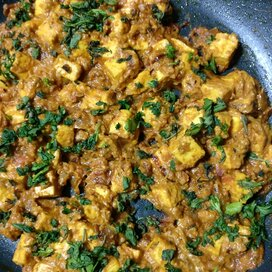

Paneer

Description
When we were kids, whenever my parents went out to an adults only party,
my mother used to ask us what we wanted for dinner at home. 99% of the time,
our choice was pooris and shahi paneer. My mother was always nice enough to oblige.
Here is the recipe.
It is quite rich and hence a nice treat.
Ingredients
- Paneer
- Cream
- Butter
- Spices & herbs
- Ripe red juicy tomatoes
Steps
- Soak 18 to 20 cashews in ⅓ cup hot water for 20 to 30 minutes.
- When the cashews are soaking, you can prep the other ingredients like chopping tomatoes,
chopping and preparing the ginger-garlic paste, slicing paneer etc.
- Crush 1-inch ginger + 3 to 4 medium-sized garlic to a paste in a mortar pestle to a semi-fine or fine paste.
Keep aside. Don’t add any water while crushing ginger & garlic.
- Mix the cashew paste very well with the cooked tomato puree and continue to stir
and sauté on a low to medium-low flame.
Stir non-stop after adding cashew paste.